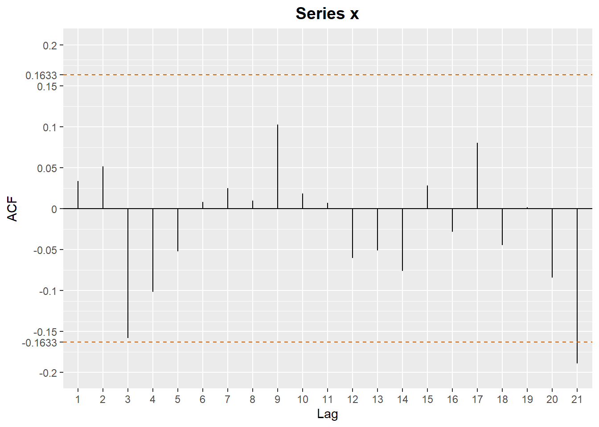

Cvičenie 1 - Testovanie autokorelácií, Bassov model
1 Opakovanie prednášky
1.1 Základné pojmy
- Čo je biely šum? (stredná hodnota, disperzia, autokovariancia)
- Silná a slabá stacionarita?
- Čo je autokorelačná funkcia?
- Čo znamená ergodický proces?
1.2 Generovanie nezávislých dát
Vygenerujeme dáta - biely šum posunutý o konštantu, takže bude mať nulové autokorelácie.
N <- 150 # počet pozorovaní
set.seed(101) # repredukovateľnosť výsledkov
x <- rnorm(N, mean = 5, sd = 1) # nezávislé z N(5,1)Zobrazíme si priebeh vygenerovaných dát

1.3 Testovanie nulovosti autokorelácií - každá samostatne
Zobrazíme autokoreláčnú funkciu: (napr. príklaz acf)  Otázky:
- Akú hypotézu vieme takýmto prístupom testovať pre každú autokoreláciu?
- Aké vyzerá disperzia odhadu autokorelačnej funkcie, ak pracujeme s bielym šumom? Čo predpokladáme?
- Kedy hypotézu \(H_{0}\) zamietame? Ako vyzerá interval spoľahlivosti?
- Čo dostaváme v našom prípade?
1.4 Generovanie závislých dát
Vygenerujeme si dáta, ktoré vzniknú ako suma dvoch po sebe idúcich realizácií bieleho šumu. Napríklad takto:
y <- c(x[1],x[2:N] + 0.7*x[1:(N-1)])Zobrazíme si priebeh nových dát
Zobrazíme autokoreláčnú funkciu: (napr. príklaz acf)
 Prvá autokorelácia vyšla výrazne väčšia ako je hodnota intervalu
spoľahlivosti. Môžeme z toho usudzovať, že daný proces nie je bielym
šumom. Keďže zvyšné autokorelácie vychádzajú menej, poprípade na hrane,
ako je hodnota intervalu spoľahlivosti, má zmysel testovať aj hypotézu,
že \(\rho_1 \neq 0\) ale \(\rho_2=\rho_3=\rho_4=...=0\). Za tohto
predpokladu, že všetky korelácie sú nulové od lagu \(p\) a vyššie, vieme aproximovať disperziu
zvyšných autkorelacií ako: \[D(\hat{\rho_{i}}) \approx
\frac{1}{N}(1+2\sum_{k=1}^{p}\rho_{k}^{2})\] V našom prípade je
\(p=1\). Zobrazíme si opäť
autokorelačnú funkciu, tento krát ale s inými intervalmi
spoľahlivosti.
Prvá autokorelácia vyšla výrazne väčšia ako je hodnota intervalu
spoľahlivosti. Môžeme z toho usudzovať, že daný proces nie je bielym
šumom. Keďže zvyšné autokorelácie vychádzajú menej, poprípade na hrane,
ako je hodnota intervalu spoľahlivosti, má zmysel testovať aj hypotézu,
že \(\rho_1 \neq 0\) ale \(\rho_2=\rho_3=\rho_4=...=0\). Za tohto
predpokladu, že všetky korelácie sú nulové od lagu \(p\) a vyššie, vieme aproximovať disperziu
zvyšných autkorelacií ako: \[D(\hat{\rho_{i}}) \approx
\frac{1}{N}(1+2\sum_{k=1}^{p}\rho_{k}^{2})\] V našom prípade je
\(p=1\). Zobrazíme si opäť
autokorelačnú funkciu, tento krát ale s inými intervalmi
spoľahlivosti.
1.5 Testovanie nulovostí autokorelácií - Ljung-Boxov test
Otestujte Ljung-Boxovým testom, že autokorelácie rádu 1,2,3,4 sú súčasne nulové (\(\rho_1=\rho_2=\rho_3=\rho_4=0\))
Box.test(x, lag = 4, type = "Ljung-Box")##
## Box-Ljung test
##
## data: x
## X-squared = 6.1076, df = 4, p-value = 0.1913Otázky:
- Ako sa vypočíta testovacia štatistika?
- Aké je pravdepodobnostné rozdelenie štatistiky za platnosti nulovej hypotézy \(H_{0}\)?
- Pre aké hodnoty testovej štatistiky zamietame hypotézu \(H_{0}\)?
- Ako sa určí p-hodnota?
- Čo dostávame v našom prípade?
V cykle vypočítajte p-hodnoty zodpovedajúce testovaniu hypotézy, že prvých k autokorelácií je súcasne nulových. Výsledok znázornite graficky, zobrazte získané p hodnoty a hranicu 0.05.
Oplatí sa nastaviť y-ovú os na interval (0, 1), aby bol skript univerzálny pre všetky dáta, aby sa vždy (aj pri vysokých p hodnotách) dala vidieť vyznačená hodnota 0.05, s ktorou p hodnoty porovnávame.
k <- 10
p.values <- c()
for(i in 1:k)
{
p.values <- c(p.values,
Box.test(x, lag = i, type ="Ljung-Box")$p.value)
}
p.values <- data.frame(p.values = p.values,
Lags = as.factor(1:k))
ggplot(data = p.values, aes(x = Lags, y= p.values))+
geom_point(size=2, shape=23)+
geom_hline(yintercept = 0.05,linetype='dashed', col = '#D55E00')+
geom_hline(yintercept = 0)+
ggtitle(paste0("Ljung-Boxov test - p-values"))+
theme(plot.title = element_text(hjust = 0.5, size=14, face="bold"))+
scale_y_continuous(limits = c(0, 1))
2 Analýza výnosov akcií
Pomocou knižnice quantmod načítame priamo do R-ka ceny
akcií a zistíme, či sú korelované alebo nie.
2.1 Načítanie dát o cenách akcií pomocou knižnice quantmod
Načítajte (ak treba, tak nainštalujte) knižnicu
quantmod
library(quantmod)Na získanie cien akcií sa použije funkcia getSymbols,
napríklad:
getSymbols("NFLX", from = "2019-01-01", to = "2020-01-01", auto.assign = TRUE)## [1] "NFLX"Pozrime sa, ako vyzerajú naše dáta, ktoré sú uložené v premennej
NFLX, zobrazíme ich začiatok:
head(NFLX)## NFLX.Open NFLX.High NFLX.Low NFLX.Close NFLX.Volume NFLX.Adjusted
## 2019-01-02 259.28 269.75 256.58 267.66 11679500 267.66
## 2019-01-03 270.20 275.79 264.43 271.20 14969600 271.20
## 2019-01-04 281.88 297.80 278.54 297.57 19330100 297.57
## 2019-01-07 302.10 316.80 301.65 315.34 18620100 315.34
## 2019-01-08 319.98 320.59 308.01 320.27 15359200 320.27
## 2019-01-09 317.71 323.35 313.50 319.96 13343200 319.962.2 Grafy pomocou quantmod
Napr.:
chartSeries(NFLX, up.col = "#009E73", dn.col = "#D55E00")
Skúste aj:
chartSeries(NFLX, subset="2019-06::2019-12", up.col = "#009E73", dn.col = "#D55E00") # od juna do septembra
NFLX.mesacne <- to.monthly(NFLX) # mesacne data
NFLX.mesacne # vypiseme## NFLX.Open NFLX.High NFLX.Low NFLX.Close NFLX.Volume NFLX.Adjusted
## jan 2019 259.28 358.85 256.58 339.50 306616400 339.50
## feb 2019 337.18 371.49 336.50 358.10 148192100 358.10
## mar 2019 362.26 379.00 342.47 356.56 144843100 356.56
## apr 2019 359.00 384.80 342.27 370.54 165079400 370.54
## máj 2019 374.00 385.99 341.39 343.28 125298300 343.28
## jún 2019 343.56 375.00 332.65 367.32 111052000 367.32
## júl 2019 373.50 384.76 305.81 322.99 196652500 322.99
## aug 2019 324.25 328.58 287.20 293.75 137076700 293.75
## sep 2019 290.82 301.55 252.28 267.62 175411300 267.62
## okt 2019 267.35 308.75 257.01 287.41 231556400 287.41
## nov 2019 288.70 316.82 281.14 314.66 113645900 314.66
## dec 2019 314.39 338.00 292.02 323.57 124723600 323.57chartSeries(NFLX.mesacne, up.col = "#009E73", dn.col = "#D55E00") # graf2.3 Výnosy akcií
Z týchto dát NFLX budeme potrebovať posledný stĺpec
(NFLX.Adjusted), z ktorého vypočítame výnosy. Budeme
pracovať so spojitými výnosmi, teda denné výnosy sa budú počítať ako
logaritmus podielu cien v dvoch po sebe idúcich dňoch. Ekvivalentne:
ceny <- NFLX$NFLX.Adjusted
vynosy <- diff(log(ceny))
vynosy <- vynosy[-1]Priebeh výnosov:
chartSeries(vynosy, theme=chartTheme('white',up.col="#009E73"))
Autokorelačná funkcia:

2.4 Testovanie autokorelácií
Zistite, či výnosy firmy Netflix sú nekorelované. Použite výberovú autokorelačnú funkciu a Ljung-Boxov test.
(Výsledok)
k <- 10
p.values <- c()
for(i in 1:k)
{
p.values <- c(p.values,
Box.test(vynosy, lag = i, type ="Ljung-Box")$p.value)
}
p.values <- data.frame(p.values = p.values,
Lags = as.factor(1:k))
ggplot(data = p.values, aes(x = Lags, y= p.values))+
geom_point(size=2, shape=23)+
geom_hline(yintercept = 0.05,linetype='dashed', col = '#D55E00')+
geom_hline(yintercept = 0)+
ggtitle(paste0("Ljung-Boxov test - p-values"))+
theme(plot.title = element_text(hjust = 0.5, size=14, face="bold"))+
scale_y_continuous(limits = c(0, 1))
3 Rmarkdown
Užitočné odkazy na tvorbu Rmarkdownu/syntax:
R markdown: http://rmarkdown.rstudio.com/
Konkrétne HTML dokumenty: https://bookdown.org/yihui/rmarkdown/html-document.html
Užitočný môže byť aj interaktívny notebook: https://bookdown.org/yihui/rmarkdown/notebook.html